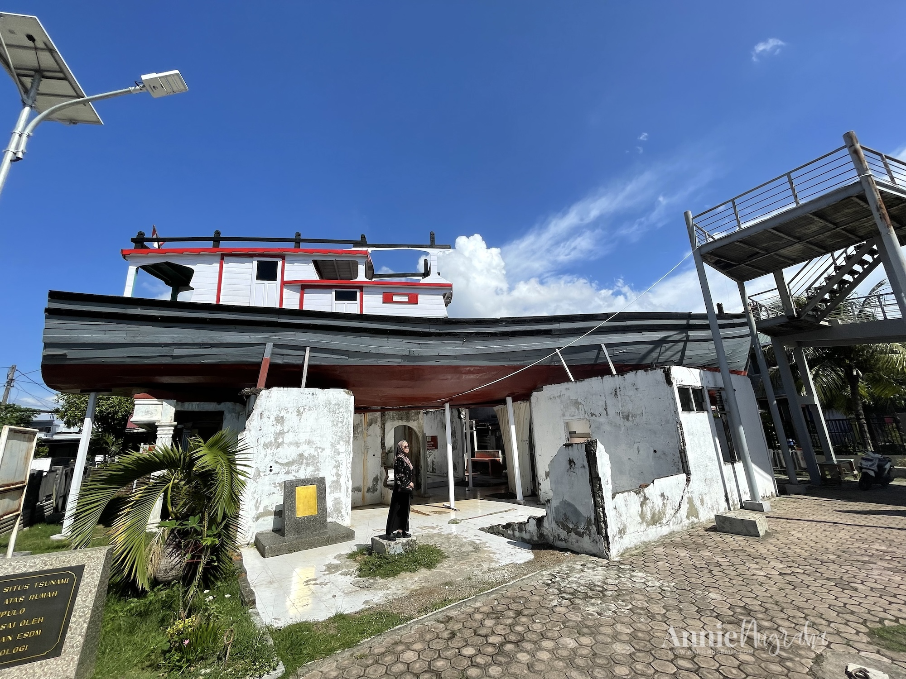
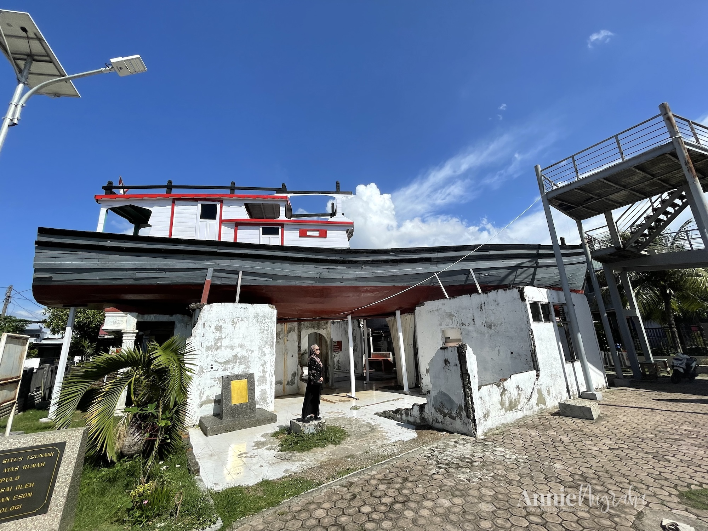
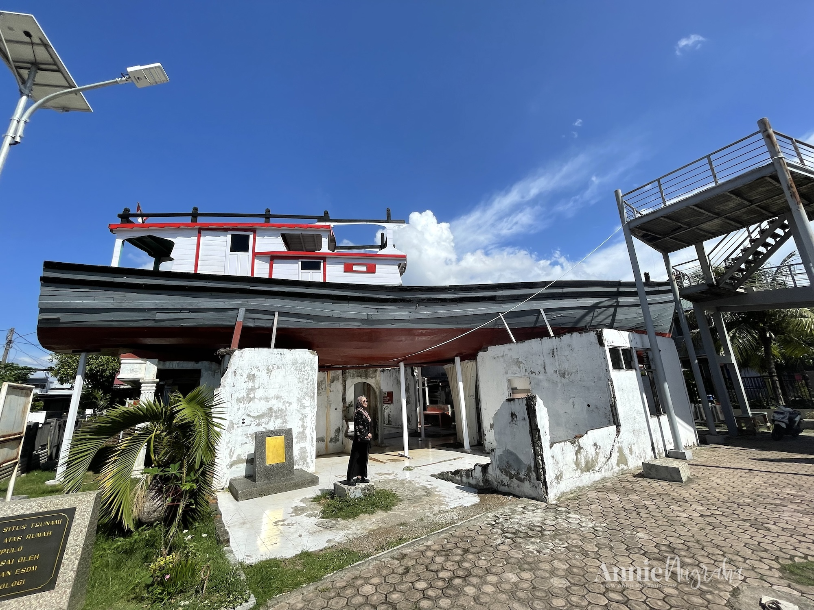
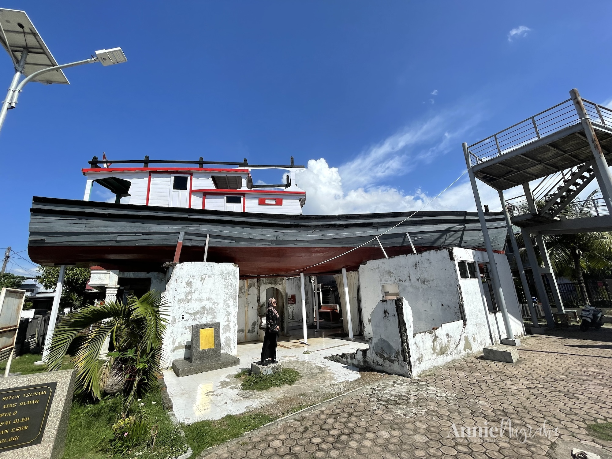
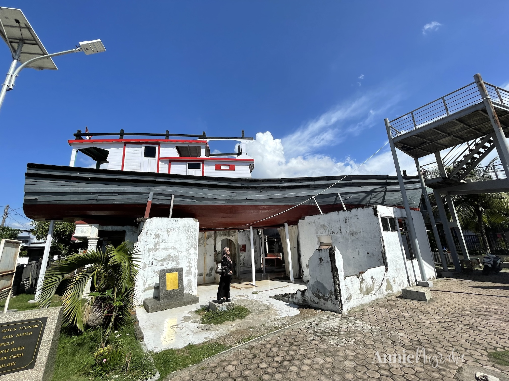

Media Aceh
Beranda
Destinasi
Media
Kontak
Galeri Gambar Destinasi Wisata
Masjid Raya Baiturrahman
Museum Tsunami Aceh
Pantai Ulee Lheue
PLTD Apung
Kapal di Atas Rumah

Lagu Tradisional: Aceh Lon Sayang
Video Himne Aceh
 


